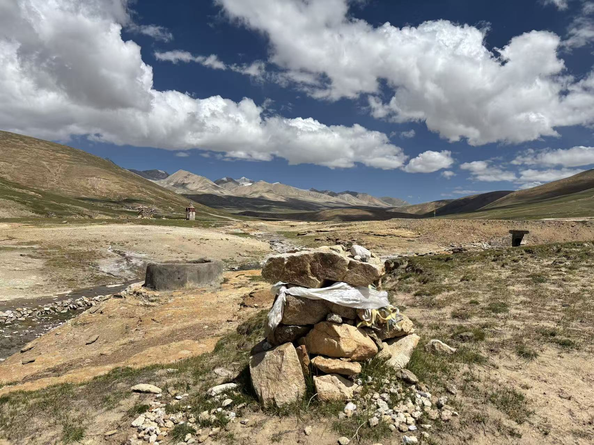
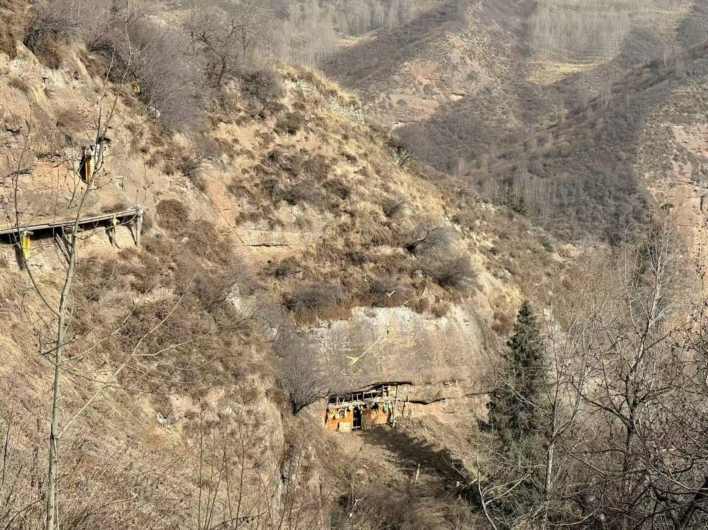
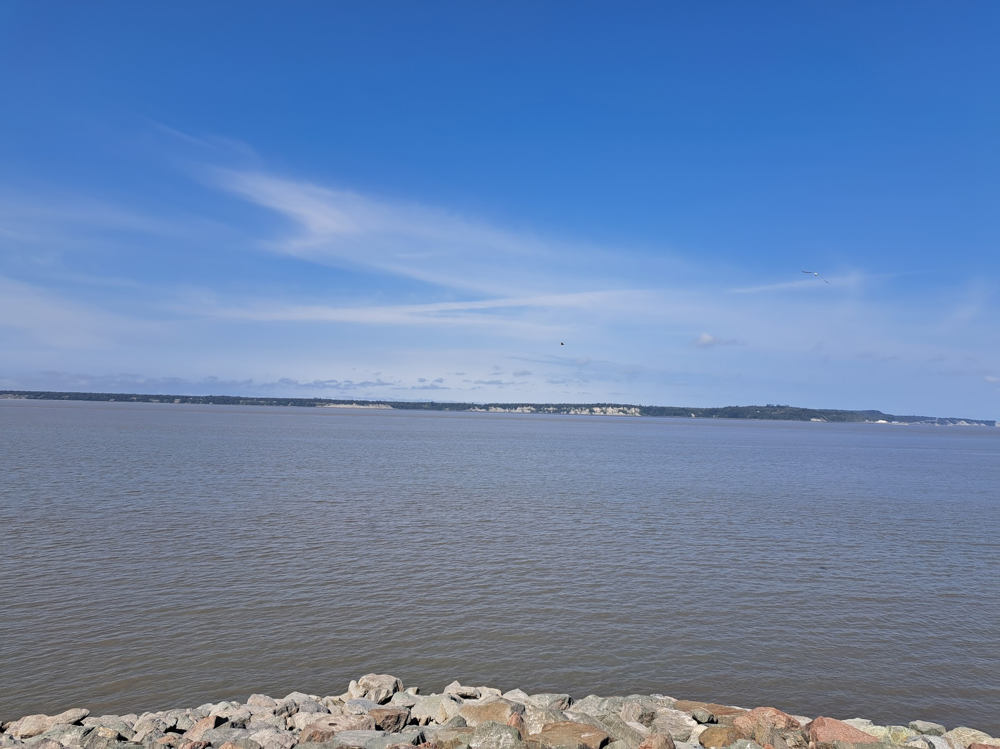

I have a longstanding interest in exploring frontier regions and remote landscapes through fieldwork. My research has taken me across Tibet, Xinjiang, Inner Mongolia, and Alaska, where I have conducted investigations related to historical geography, environmental history, archaeology, and landscape change.
Extensive field experience in the Tibetan Plateau, Xinjiang, and the Amdo region has informed my understanding of historical settlements, religious landscapes, and long-term human–environment interactions.
Selected fieldwork photographs from Tibet, Xinjiang, and Alaska.

Landscape near a geothermal area, Shigatse (2025)

Ninth-century meditation cave associated with Tibetan Buddhist practice (2026)

Abandoned settlement in the northern Tianshan Mountains (2018)

Knik Arm landscape, Anchorage (2023)